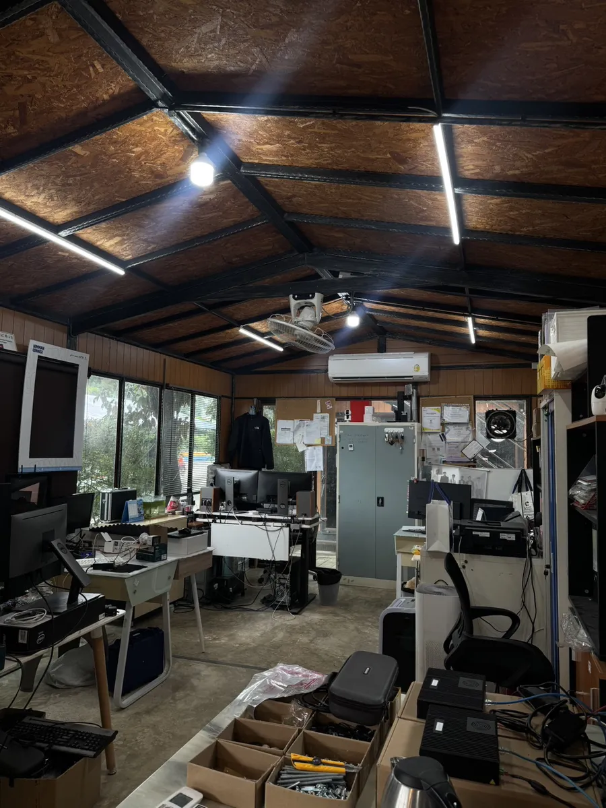
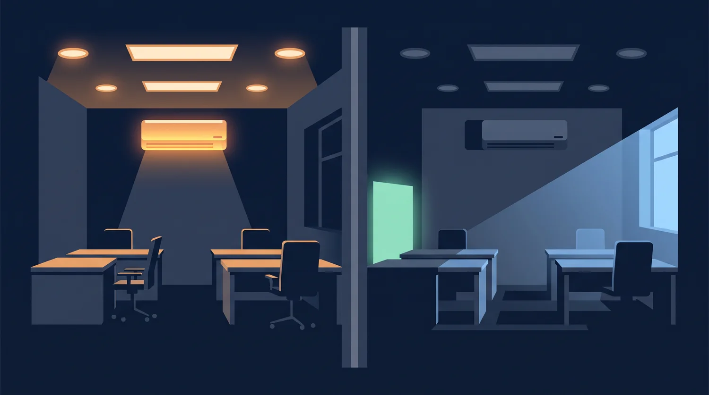
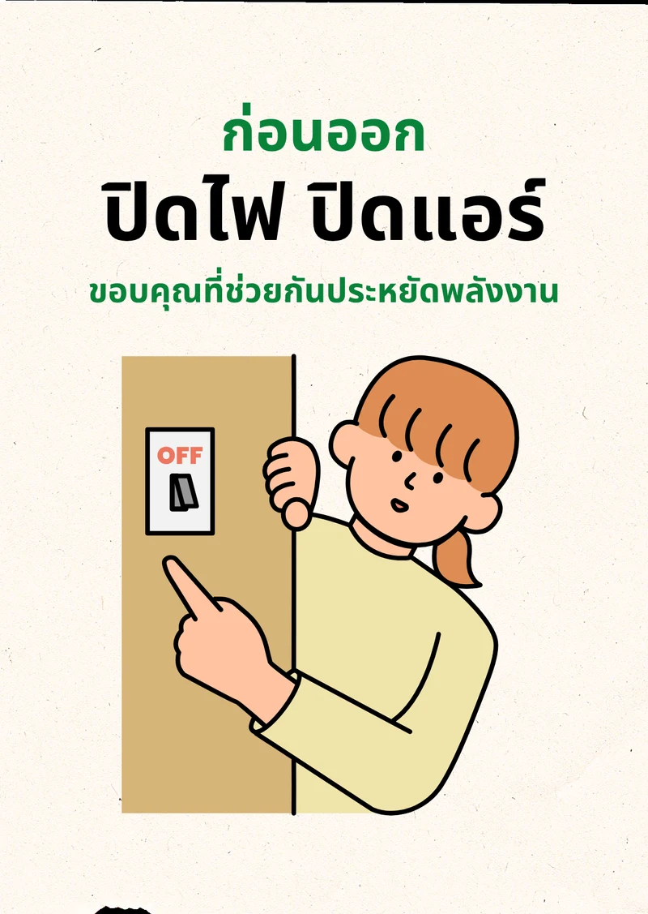
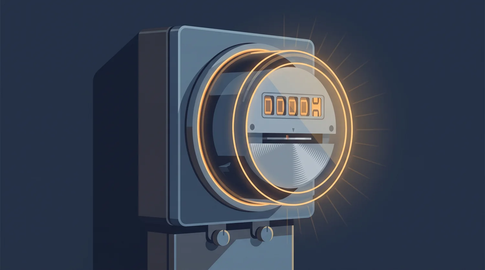

ข้อเสนอโครงการวิจัยฉบับปรับปรุง · 14 ส.ค. 2569
ป้ายเตือนหนึ่งใบประหยัดไฟได้จริงไหม
ประสิทธิผลของการติดตั้งป้ายเตือนต่อพฤติกรรมการปิดอุปกรณ์ไฟฟ้าและการประหยัดพลังงานไฟฟ้าในสำนักงาน
The Effectiveness of Reminder Sign Installation on Switch-off Behaviour and Electrical Energy Saving of Office Employees
01 · การปรับทิศทาง
ปรับตามข้อเสนอแนะ : เปลี่ยนตัวชี้วัดหลัก
ฉบับเดิม
ตัวชี้วัดหลัก = อัตราการลืม (Forget Rate)
เปรียบเทียบตำแหน่งติดป้ายหลายจุด
บอกได้ว่าพฤติกรรมเปลี่ยน แต่ยังไม่รู้ว่าประหยัดไฟเท่าไหร่
ขอบเขตกว้าง ตัวแปรเยอะ
➜
ฉบับปรับปรุง
ตัวชี้วัดหลัก = หน่วยไฟฟ้าที่ประหยัดได้จริง
Energy Saving Rate (%) จากมิเตอร์จริง
Cost Saving (บาท) จับต้องได้ องค์กรตัดสินใจได้
ตัดตัวแปรตำแหน่งออก เหลือ มีป้าย vs ไม่มีป้าย
Forget Rate ยังเก็บ แต่เป็นตัวประกอบอธิบายกลไก
คำถามใหม่ชัดขึ้น : “ป้ายเตือนช่วยลดการใช้พลังงานได้หรือไม่ และลดได้มากน้อยเพียงใด”
02 · ปัญหา
พนักงาน 75% เคยลืมปิดไฟก่อนออกจากพื้นที่
จากการสำรวจพนักงานในพื้นที่ศึกษา 8 คน
เกิดซ้ำในช่วงเปลี่ยนผ่านกิจกรรม : พักกลางวัน · ออกไปประชุม · ออกไปทำธุระ
พบไฟและเครื่องปรับอากาศทำงานต่อขณะห้องว่าง
สาเหตุคือ Post-Completion Error การลืมขั้นตอนสุดท้ายหลังบรรลุเป้าหมายหลัก
พนักงานไม่ได้ขาดความรู้หรือความตระหนัก แต่เป็นข้อจำกัดตามธรรมชาติของระบบความจำมนุษย์

ถ่ายจริงจากสำนักงานใน Innovative Village ขณะห้องว่าง
03 · คำถามการวิจัย
คำถามหลัก
การติดตั้งป้ายเตือนกระตุ้นความจำก่อนออกจากสำนักงาน สามารถช่วยลดการใช้พลังงานไฟฟ้า จากการลืมปิดไฟและเครื่องปรับอากาศได้หรือไม่ และลดลงคิดเป็นอัตราการประหยัดพลังงานและมูลค่าเท่าใด
คำถามรอง
ปริมาณการใช้ไฟฟ้าช่วงพักกลางวันต่างกันอย่างไร ระหว่างช่วง Baseline และช่วง Intervention
อัตราการประหยัดพลังงานคิดเป็นมูลค่าเงินกี่บาท (Cost Saving)
ป้ายเตือนส่งผลต่ออัตราการลืมปิดอุปกรณ์ อย่างไร เพื่ออธิบายกลไกการเปลี่ยนแปลงเชิงพฤติกรรม
04 · วัตถุประสงค์
วัตถุประสงค์ของการวิจัย
เพื่อศึกษาปริมาณการใช้ไฟฟ้าปกติ ช่วงพักกลางวันก่อนติดตั้งป้ายเตือน (Baseline)
เพื่อประเมินและเปรียบเทียบ ปริมาณการใช้ไฟฟ้าระหว่างช่วงไม่มีป้ายและช่วงมีป้าย
เพื่อคำนวณอัตราการประหยัดพลังงาน (Energy Saving Rate) และมูลค่าที่ลดลง (Cost Saving)
เพื่อบันทึกพฤติกรรมการลืมปิด ไฟและเครื่องปรับอากาศในช่วงห้องว่าง
05 · สมมติฐาน
สมมติฐานการวิจัย
H1 · สมมติฐานหลัก
การติดตั้งป้ายเตือนก่อนออกจากพื้นที่จะลดปริมาณการใช้พลังงานไฟฟ้าเฉลี่ยในช่วงพักกลางวัน เมื่อเทียบกับช่วงไม่มีป้าย
H2 · สมมติฐานรอง
อัตราการลืม (Forget Rate) ในช่วงติดตั้งป้าย จะต่ำกว่าช่วง Baseline

ซ้าย : ห้องว่างแต่อุปกรณ์ยังทำงาน · ขวา : สภาพที่คาดหวังหลังติดตั้งป้ายเตือน
06 · ทบทวนวรรณกรรม
งานวิจัยที่รองรับ
Post-Completion Error คนลืมขั้นตอนสุดท้ายหลังบรรลุเป้าหมายหลัก ไม่ใช่การละเลย แต่เป็นข้อจำกัดของระบบความจำ
Tetlow et al. (2014), Building and Environment
Prospective Memory ความจำสำหรับสิ่งที่ตั้งใจจะทำในอนาคตล้มเหลวเมื่อถูกขัดจังหวะ ต้องใช้ External Memory Aid ช่วย
Dismukes (2012)
Point-of-Decision Prompt ป้ายที่ติด ณ จุดตัดสินใจเปลี่ยนพฤติกรรมได้อย่างมีนัยสำคัญ จึงติดที่ประตูทางออกซึ่งเป็นจุดตัดสินใจสุดท้าย
Community Preventive Services Task Force (2010)
ป้ายเตือนที่สวิตช์ไฟ ลดชั่วโมงการเปิดใช้อุปกรณ์ที่ไม่จำเป็นลง ร้อยละ 20 ถึง 22 ในสำนักงานจริง 77 ห้อง
Rea, Dillon & Levy (1987)
ผลย้อนกลับและปฏิกิริยาต่อต้าน ข้อความเชิงบังคับก่อ Psychological Reactance และการระบุว่า “พนักงาน 75% เคยลืมปิดไฟ” ก่อ Boomerang Effect ทำให้กลุ่มที่ทำดีอยู่แล้วผ่อนปรนลง จึงออกแบบป้ายให้เป็นกลางและเฉพาะเจาะจง
Schultz et al. (2007), Psychological Science
07 · ช่องว่างของงานวิจัย
งานก่อนหน้าหยุดอยู่ที่ พฤติกรรม หน่วยพลังงานและเงิน
สิ่งที่มีแล้ว ยืนยันว่าป้ายเตือนลดการเปิดอุปกรณ์ที่ไม่จำเป็นได้ วัดเป็นสัดส่วนพฤติกรรม
สิ่งที่ยังขาด ไม่ได้วัดปริมาณไฟฟ้าที่ลดลงจริงเป็น kWh และไม่ได้แปลงเป็นมูลค่าทางการเงิน
สิ่งที่งานนี้เติม วัดหน่วยพลังงานจริงจากมิเตอร์ในสำนักงานไทย พร้อมคำนวณเงินที่ประหยัดได้
ตัวเลขที่เป็น บาท คือสิ่งที่ทำให้องค์กรตัดสินใจนำมาตรการไปใช้จริงได้
08 · ระเบียบวิธีวิจัย
รูปแบบและตัวแปร
รูปแบบการวิจัย การทดลองภาคสนาม (Field Experiment) เปรียบเทียบก่อนและหลัง Pre-Post / Baseline-Intervention Design ดำเนินการพร้อมกันทั้ง 5 สำนักงาน เพื่อควบคุมปัจจัยสภาพอากาศและปัจจัยภายนอกให้เป็นชุดเดียวกัน
ประชากรและกลุ่มตัวอย่าง พนักงานประจำ 5 บริษัทใน Innovative Village รวม 21 คน เลือกแบบเจาะจง (Purposive Sampling) เพื่อเก็บข้อมูลเชิงลึกรายวัน
ตัวแปรอิสระ การติดตั้งป้ายเตือน : Baseline (ไม่มีป้าย) และ Intervention (มีป้าย)
ตัวแปรตามหลัก
ปริมาณการใช้ไฟฟ้าจริง (kWh) ช่วง 12.00 ถึง 13.00 น.
Energy Saving Rate (%)
Cost Saving (บาท)
ตัวแปรตามประกอบ อัตราการลืมปิดอุปกรณ์ (Forget Rate) ของไฟและเครื่องปรับอากาศขณะห้องว่าง
09 · สิ่งทดลอง
ป้ายเตือน “ก่อนออก : ปิดไฟ ปิดแอร์”
เจาะจงพฤติกรรม ระบุอุปกรณ์ตรง ๆ ไม่ใช่คำเชิญชวนนามธรรมไม่เป็นคำสั่งหรือตำหนิ ลดความเสี่ยงจาก Psychological Reactanceไม่อ้างบรรทัดฐานเชิงลบ ป้องกัน Boomerang Effect ตาม Schultz et al.กระดาษการ์ดขนาดไม่ต่ำกว่า A6 ข้อความ สี ขนาด วัสดุ เหมือนกันทุกสำนักงาน
ติดตั้ง จุดเดียว ทุกสำนักงาน : ระดับสายตาบริเวณประตูทางออก ด้านใน ซึ่งเป็นจุดตัดสินใจสุดท้ายก่อนออกจากห้อง

ป้ายที่ใช้จริงในการทดลอง ขนาด A6
10 · เงื่อนไขการทดลอง
Baseline 5 วัน → Intervention 10 วัน
เตรียมการ ขออนุญาตผู้บริหาร · วัดค่าฐานไฟฟ้าในวันหยุด · ผลิตป้าย · ทดสอบความเที่ยงตรงระหว่างผู้ตรวจ
Baseline · 5 วันทำการ ยังไม่ติดป้าย จดมิเตอร์ 12.00 และ 13.00 น. สังเกตพฤติกรรม 12.15 น.
Intervention · 10 วันทำการ ติดป้ายทั้ง 5 สำนักงาน เก็บข้อมูลด้วยวิธีเดิมเวลาเดิม
วิเคราะห์ คำนวณ Energy Saving Rate · Cost Saving · เทียบ Forget Rate ก่อนหลัง
สุ่มตรวจนอกรอบสัปดาห์ละ 2 ครั้ง โดยไม่แจ้งล่วงหน้า เพื่อป้องกันการปรับพฤติกรรมชั่วคราวเพราะรู้ว่ามีผู้ตรวจ (Hawthorne Effect)
ดำเนินการพร้อมกันทั้ง 5 สำนักงาน เพื่อให้ทุกแห่งเจอสภาพอากาศและเงื่อนไขภายนอกชุดเดียวกัน
11 · การวัดผล
วัดที่ มิเตอร์ ไม่ใช่ที่บิลรายเดือน
0 0 0 0 0
Energy Saving Rate (%) = [(kWh เฉลี่ย Baseline − kWh เฉลี่ย Intervention) ÷ kWh เฉลี่ย Baseline] × 100
Cost Saving (บาท) = หน่วยไฟฟ้าที่ลดลงรวม × อัตราค่าไฟฟ้าจริงของ กฟภ.
Forget Rate (%) = ครั้งที่พบห้องว่างแต่ยังเปิดอุปกรณ์ ÷ ครั้งที่ตรวจพบห้องว่างทั้งหมด × 100
ไม่คำนวณจากบิลค่าไฟรวมรายเดือน เพื่อหลีกเลี่ยงปัจจัยแทรกซ้อน เช่น สภาพอากาศและนโยบายภาครัฐ

จดเลขมิเตอร์เวลา 12.00 น. และ 13.00 น. ทุกวันทำการ ผลต่างคือหน่วยไฟฟ้าที่ใช้ช่วงพักกลางวัน
12 · เครื่องมือเก็บข้อมูล
เครื่องมือและวิธีการ
1 · แบบบันทึกการสังเกตพฤติกรรม
เข้าตรวจสำนักงานทั้ง 5 แห่ง ทุกวันทำการเวลา 12.15 น. บันทึกผ่าน Google Form บนมือถือ
รหัสห้องทำงานและบริษัท
สถานะบุคคลภายในห้อง : มีคน หรือ ห้องว่าง
สถานะหลอดไฟ : เปิด หรือ ปิด
สถานะเครื่องปรับอากาศ : เปิด หรือ ปิด
ภาพถ่ายยืนยันเฉพาะกรณีห้องว่างแต่พบอุปกรณ์เปิดทิ้ง
2 · แบบจดบันทึกมิเตอร์ไฟฟ้า
จดเลขมิเตอร์ 12.00 น. และ 13.00 น. ของทุกวันทำการ ผลต่างคือหน่วยไฟฟ้าที่ใช้ในช่วงพักกลางวัน
วัดค่าฐานอุปกรณ์ที่ต้องเปิดตลอดเวลาในวันหยุด
ตรวจสอบสภาพและความถูกต้องของมิเตอร์ทุกสัปดาห์
บันทึกสภาพอากาศและจำนวนพนักงานรายวันประกอบ
อุปกรณ์ที่ศึกษาคือหลอดไฟส่องสว่างและเครื่องปรับอากาศ ไม่รวมอุปกรณ์ที่ต้องเปิดตลอดเวลา เช่น เครื่องแม่ข่าย อุปกรณ์เครือข่าย และตู้เย็น
13 · การควบคุมตัวแปรและจริยธรรม
ควบคุมอะไรบ้าง
การควบคุมตัวแปรแทรกซ้อน
ป้ายทั้ง 5 สำนักงาน ข้อความ ขนาด A6 สี และวัสดุเหมือนกันทั้งหมด
ผู้ประเมินตรวจในเส้นทางและลำดับเดิม ทุกครั้ง เวลา 12.15 น.
ตำแหน่งติดตั้งจุดเดียวเหมือนกันทุกแห่ง ที่ประตูทางออกด้านใน ระดับสายตา
บันทึกอุณหภูมิและจำนวนพนักงานรายวันประกอบการวิเคราะห์
ทดสอบความเที่ยงตรงระหว่างผู้ตรวจ (Inter-rater Reliability) ก่อนเริ่มเก็บจริง
ข้อพิจารณาด้านจริยธรรม
ขออนุมัติอย่างเป็นทางการจากผู้บริหารทั้ง 5 บริษัทก่อนเริ่มเก็บข้อมูล
ไม่เก็บภาพถ่ายที่ติดพนักงานหรือบุคคล ใช้เฉพาะภาพห้องว่างที่พบอุปกรณ์เปิดทิ้งรายงานผลในระดับห้องและระดับสำนักงาน ไม่ระบุพฤติกรรมรายบุคคล
แจ้งผลการวิจัยแก่ผู้ให้ความร่วมมือเมื่อสิ้นสุดโครงการ
14 · แผนการดำเนินงาน
แผนงาน 4 สัปดาห์
กิจกรรม สัปดาห์ 1 สัปดาห์ 2 สัปดาห์ 3 สัปดาห์ 4 ประสานงานและจัดทำสิ่งทดลอง ● เก็บข้อมูลค่าฐาน (Baseline) ● ทดลองใช้ป้ายเตือน (Intervention) ● ● วิเคราะห์และสรุปรายงานผล ●
15 · ข้อจำกัด
ข้อจำกัดของการวิจัย และวิธีรับมือ
กลุ่มตัวอย่างจำกัด
5 สำนักงานสตาร์ทอัพขนาดเล็ก ผลอาจมีลักษณะเฉพาะตามวัฒนธรรมองค์กร
รับมือ : เก็บข้อมูลรายวันต่อเนื่อง เพิ่มจำนวนหน่วยวิเคราะห์ให้อยู่ในระดับที่น่าเชื่อถือ
ตัวแปรสภาพอากาศ
การทำงานของเครื่องปรับอากาศแปรผันตามอุณหภูมิภายนอกรายวัน
รับมือ : ใช้ผลต่างหน่วยไฟภายในวันเดียวกัน ช่วง 1 ชั่วโมง แทนผลรวมรายเดือน และบันทึกอากาศทุกวัน
ความยั่งยืนของพฤติกรรม
ระยะทดลอง 10 วันทำการ ผลอาจเกิดจากความแปลกใหม่ในระยะแรก (Novelty Effect)
รับมือ : เก็บข้อมูลรายวันเพื่อดูแนวโน้มภายในช่วง และเสนอการศึกษาระยะยาวเป็นงานวิจัยต่อยอด
ผลลัพธ์ที่ออกมาไม่ว่าทิศทางใด ล้วนเป็นข้อค้นพบที่มีข้อมูลรองรับ เพราะออกแบบให้วัดได้ทั้งสองทิศทาง
เอกสารอ้างอิง
References
Community Preventive Services Task Force. Point-of-Decision Prompts to Encourage Use of Stairs.
Dismukes, R. K. (2012). Prospective Memory in Workplace and Everyday Situations.
Goldstein, N. J., Cialdini, R. B., & Griskevicius, V. A Room with a Viewpoint: Using Social Norms to Motivate Environmental Conservation in Hotels.
Point-of-decision prompts to increase stair use: A systematic review update. (2010).Rea, M. S., Dillon, R. F., & Levy, A. W. (1987). The effectiveness of light switch reminders in reducing light usage.
Schultz, P. W., Nolan, J. M., Cialdini, R. B., Goldstein, N. J., & Griskevicius, V. (2007). The Constructive, Destructive, and Reconstructive Power of Social Norms. Psychological Science.
Tetlow, R. M., et al. (2014). Identifying behavioural predictors of small power electricity consumption in office buildings. Building and Environment.